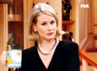

When you play christmas music the standard reaction is for someone to gasp and say
"I'm jewish." As a way to say why are you playing this but I'm totally kidding I love christmas music just don't want to really admit it. This same thing happened one fine November morning while I was with April. I started playing christmas music specifically Michael Buble because you can't go wrong and April says
"Hey I'm jewish!" Laughing it off I continued to play christmas music for the next three hours. Months later April and I are talking and she says
"For Hannukah my mom got me..." and I looked at her and said out loud
"You're what?" Clearly surprised to come to find out she is actually 100% Jewish. The day in the studio months back, I looked like I just didn't care at all what April had to say about her religion. I felt like the scrooge of hanukkah I was totally ruining the mood! Honestly surprised that our friendship blossomed even more after that moment.
Visual of me that day:
